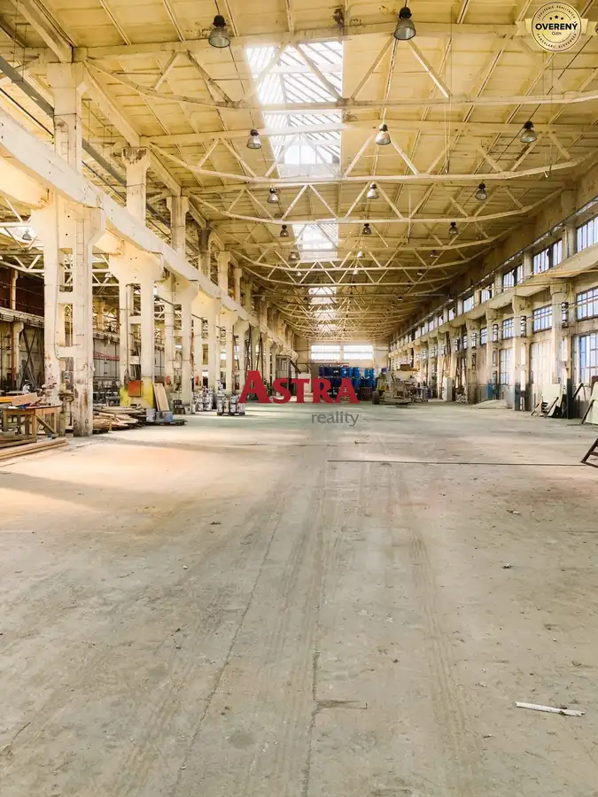
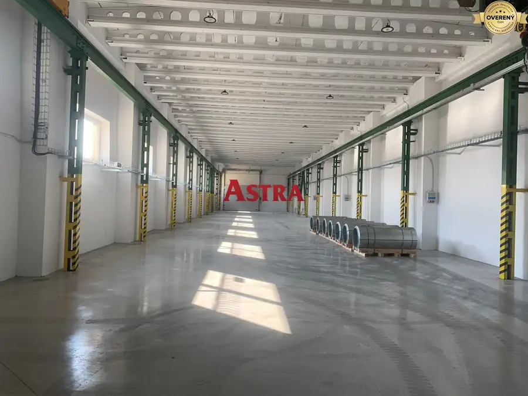
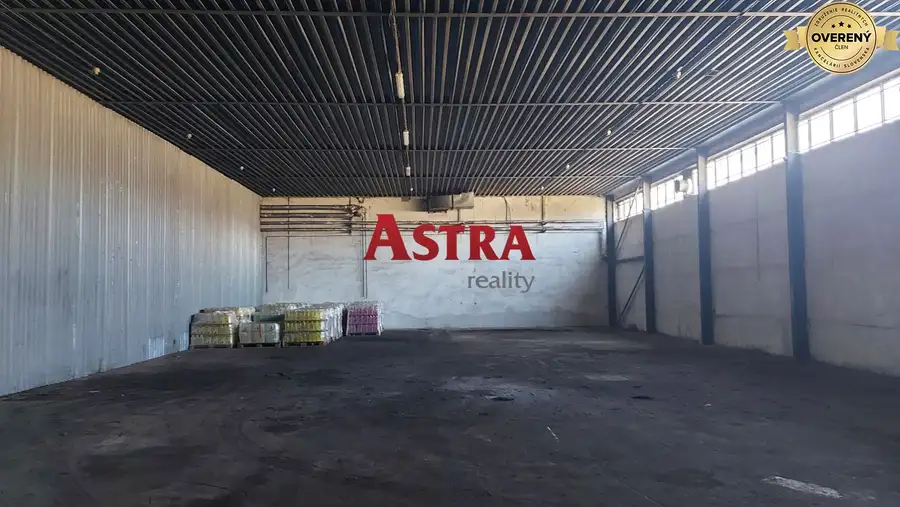
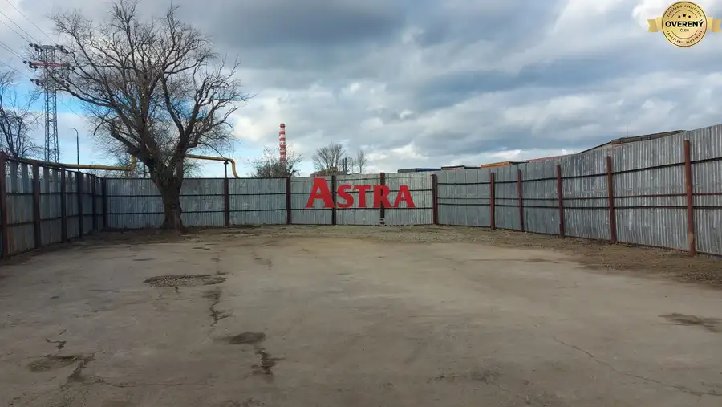
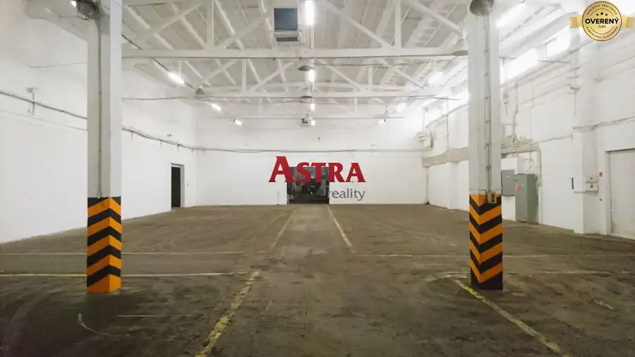

Aktuálna ponuka
Nehnuteľnosti, ktoré ponúkam
9 nehnuteľností na predaj a prenájom. Vyberte typ, alebo napíšte lokalitu.
9 z 9 ponúk
 Pozemok2
87 900 €STAVEBNÝ POZEMOK 823 m– Nižná Myšľa, iba 6 km od KOŠÍC
Okolie, Nižná Myšľa
823 m²
ASTRA reality a Ing. Jozef Takáč ponúka rovinatý pozemok v obci Nižná Myšľa so súhlasom majiteľa. Výmera pozemku je 823 m2. Šírka pozemku je…
Pozemok2
87 900 €STAVEBNÝ POZEMOK 823 m– Nižná Myšľa, iba 6 km od KOŠÍC
Okolie, Nižná Myšľa
823 m²
ASTRA reality a Ing. Jozef Takáč ponúka rovinatý pozemok v obci Nižná Myšľa so súhlasom majiteľa. Výmera pozemku je 823 m2. Šírka pozemku je…
 Nebytové priestory2
Cena dohodouPrenájom: malá kancelária 15 m2, garbiarska ulica, Košice
mestská časť Staré Mesto, Košice
15 m²2. podlažie
ASTRA reality a Ing. Jozef Takáč ponúka na prenájom kancelárie na Garbiarskej ulici v Košiciach. Samotná kancelária má rozlohu 15 m2. Sociálne…
Nebytové priestory2
Cena dohodouPrenájom: malá kancelária 15 m2, garbiarska ulica, Košice
mestská časť Staré Mesto, Košice
15 m²2. podlažie
ASTRA reality a Ing. Jozef Takáč ponúka na prenájom kancelárie na Garbiarskej ulici v Košiciach. Samotná kancelária má rozlohu 15 m2. Sociálne…
 Nebytové priestory2
Cena dohodouNa prenájom sklad 997 m2, Košice - Juh
mestská časť Juh, Košice
997 m²
Charakteristiky priestorov: - celková výmera 996,87 m2, - sklad 922,43 m2, - sociálne zázemie 74,44 m2, - elektrina v sklade, - 3x vykurované…
Nebytové priestory2
Cena dohodouNa prenájom sklad 997 m2, Košice - Juh
mestská časť Juh, Košice
997 m²
Charakteristiky priestorov: - celková výmera 996,87 m2, - sklad 922,43 m2, - sociálne zázemie 74,44 m2, - elektrina v sklade, - 3x vykurované…
 Nebytové priestory3
Cena dohodouNa prenájom sklad 632 m2, Košice - Juh
mestská časť Juh, Košice
632 m²
Charakteristiky priestorov: - celková výmera 631,90 m2, - elektrina v sklade, - WC s umývadlom a výlevkou, - samostatné merače vody a elektriny, -…
Nebytové priestory3
Cena dohodouNa prenájom sklad 632 m2, Košice - Juh
mestská časť Juh, Košice
632 m²
Charakteristiky priestorov: - celková výmera 631,90 m2, - elektrina v sklade, - WC s umývadlom a výlevkou, - samostatné merače vody a elektriny, -…

Nebytové priestory2 Cena dohodouNa prenájom skladová a výrobna hala 1000 m2, v Košiciach mestská časť Šaca, Košice 1000 m² ASTRA reality a Ing. Jozef Takáč ponúka na prenájom skladovú a výrobnú halu v meste Košice, v priemyselnom areáli mestskej časti Košice - Šaca.…
Nebytové priestory7 Cena dohodouNa prenájom výrobná a skladová hala 476 m2, v Košiciach mestská časť Krásna, Košice 476 m² ASTRA reality a Ing. Jozef Takáč ponúka na prenájom skladovú a výrobnú halu v priemyselnom areáli v Košiciach – Krásnej. Hala má výmeru 476 m2, k nej…
Nebytové priestory2 Cena dohodouNa prenájom skladové priestory 400 m2, Košice mestská časť Juh, Košice 400 m² Charakteristiky priestorov: - Výmera 400 m2. - Elektrina v sklade, bez vykurovania. - Priamy vstup – bez nutnosti nakladacej rampy. - Ideálne pre…
Pozemok3 Cena dohodouNa prenájom: pozemok 704 m2, Košice mestská časť Juh, Košice 704 m² ASTRA reality a Ing. Jozef Takáč ponúka na prenájom oplotený pozemok v Košiciach s výmerou 704 m2. Tento pozemok je vhodný ako: stavebný dvor pre…
Nebytové priestory4 Cena dohodouNa prenájom skladové a výrobné priestory, Košice mestská časť Juh, Košice 3251 m² ASTRA reality a Ing. Jozef Takáč ponúka na prenájom výrobné, skladové a kancelárske priestory v Košiciach. S celkovú výmeru 3251 m2, sú tieto…Tomuto výberu zatiaľ nezodpovedá žiadna ponuka. Napíšte mi, čo hľadáte.